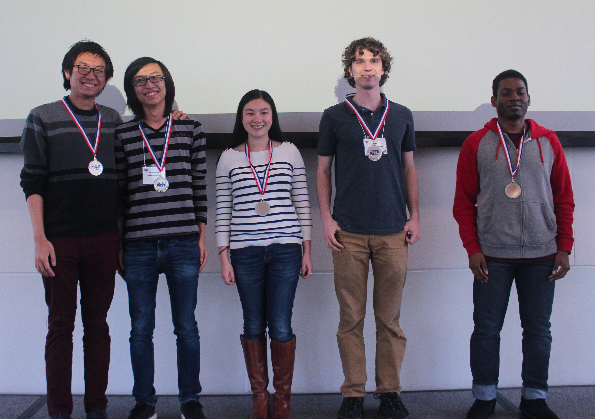

DataFest 2018
DataFest 2018 @ Duke tool place over the April 6-8, 2018 at Penn Pavillion with participation from over 380 students in 84 teams from nine schools (Duke, UNC, NC State, Wake Forest, Appalachian State University, NC A&T, NCSSM, College of William and Mary, Meredith). This was one of the thirty-six DataFests happening this spring around the world.

Before we recap the event, we would like to thank all of our sponsors as well as all the consultants and staff who helped out suring the event. This event wouldn't be possible without their contributions!
The data challenge this year was presented by Indeed.com. What advice would you give a new high school about wjat major to choose in college? How does Indeed's data compare to official government data on the labor market? Can it be used to provide good economic indicators? You can watch Indeed's pitch here.
As usual, students were free to focus on these particular challenges, or a different question of their own choosing.
At the end of two days filled with hard work, food, entertainment, and fun, the teams presented their findings to the judges in two rounds, and the judges awarded prizes in four categories (Best Visualization, Best Use of Outside Data, Best Insight, and Judges' Pick) as well as numerous honorable mentions. The winning teams and their presentations are below.

Best Visualization - BrunchLadies
BrunchLadies are a team of MS students in Statistical Science at Duke University. They are Junwen Huang, Chunxiao Li, Xuetong Li, Yunxuan Li.
BrunchLadies focused on visualizing job searching and job posting statistics in the United States. As a final product they made a Shiny app, which provides annual statistics, dynamic trends, and a Gaussian model.

Best Use of Outside Data - The Canonical Ensemble
The Canonical Ensemble hails from UNC. Gibson Bennett is a senior in Computer Science, Danielle Du Perez is a sophomore in Linguistics, Jeremy Low is a junior in physics, and Kristy Sakano is a senior in Astrophysics.
Here is how they described their project:
Many of us are seniors, and even those of us who are not are probably looking to enter the workforce soon. We want to find jobs that meet our educational qualifications, and we also want to make money! To do this, we want to find a city where lots of jobs are available for our education level, and where the salaries are high for the cost of living. We also want to help people living in the city know if it’s worth it for them to go to college!
They took a three-pronged approach: (1) analyze the average number of available jobs by education level per million people in each city using population data from the US Census, (2) normalized the city’s median salaries to the cost of living in those cities, and (3) finally, we looked at how increasing education level influences salary in each city, to see in which cities a degree would provide the greatest salary benefit. Their final product includes a Tableau visualization.

Best Insight - Quantum Banana
Quantum Banana join us from NC State. Chan Edward is a senior in Physics, Chan Mountain is a sophomore in Mathematics, Ted Mac Cabe is a senior, Tang Yiqi is an MS student in Statistical Science, and Watson Richard is a first-year student in Statistical Science.
Quantum Banana tackled two questions in their project: "How good is my job posting and how do I improve it?" and "Could the Indeed dataset predict unemployment rate 3 months ahead of time?". For the former they used a good/bad job posting classifier model using a convolutionary neural network and for the latter they used a random forest model.

Judges' Pick - Baes = Bayes
Baes = Bayes are Trenton Bricken (sophomore in Program II "Biological and Artificial Intelligence"), Gabriella Deich (sophomore in Program II "Biological and Artificial Intelligence"), Miles Turpin (sophomore in Statistical Science), Andrew Wang (first-year in Statistical Science), and James Wang (senior in Statistical Science). They are all Duke students.
Their analysis gives job seekers the opportunity to find the unique industries on a metropolitan by metropolitan area, seeing the breakdown by each specific location or how that industry distributed across the US as a whole.

Honorable mention - Univariate
Uni-variate (Jessica Chen, Forrest Hurley, Gandhar Mahadeshwar, Julia Wang, and Tyler Youngberg) is a team of seniors from the North Carolina School of Science and Math. That's right, they're high schoolers! And they approached the challenge from a high schooler's perspective, and judges awarded their work with an honorable mention.